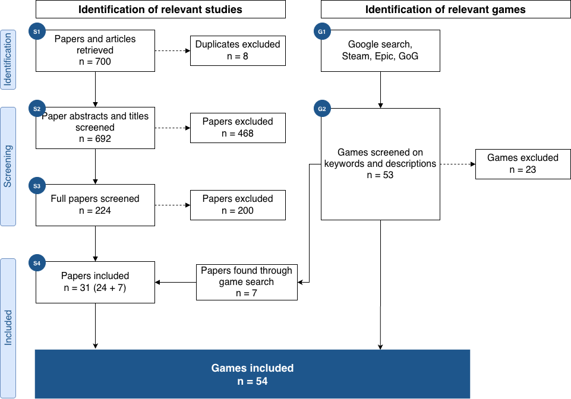
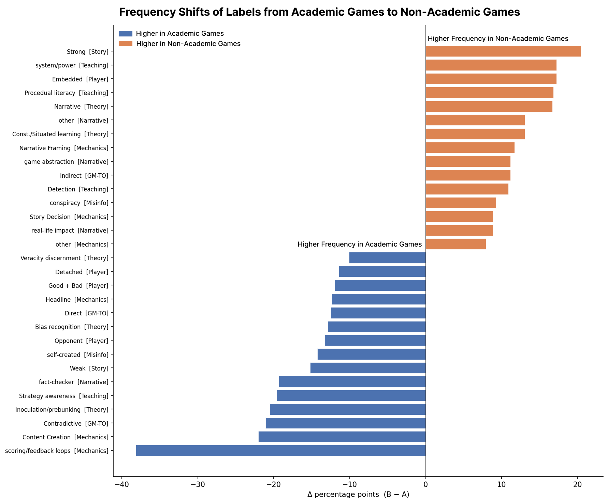
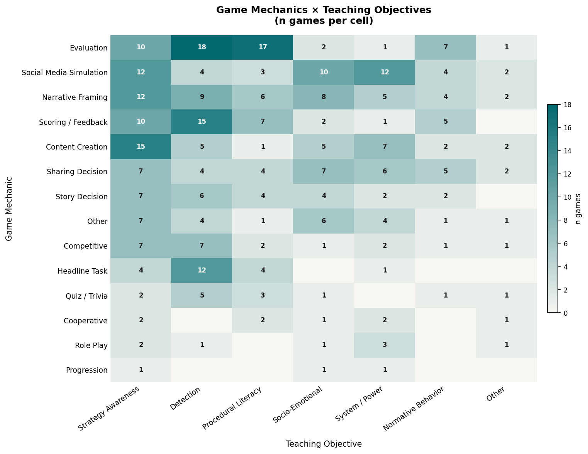

Highlights

PRISMA Review structure.

Differences between Academic and Non-Academic Games.

Co-occurence of Different Game Mechanics and Teaching Objectives.
Abstract
BibTeX
We developed a questionnaire to assess readers’ perceptions of media bias through research, reduction, and validation.
Proceedings of the ACM/IEEE Joint Conference on Digital Libraries (JCDL) 2021From Bias to Behavior.
Research Project SummaryThe Media Bias Taxonomy aims to clarify the various subtypes of media bias and standardize the interdisciplinary terminology used to describe them.
Research Project Summary

